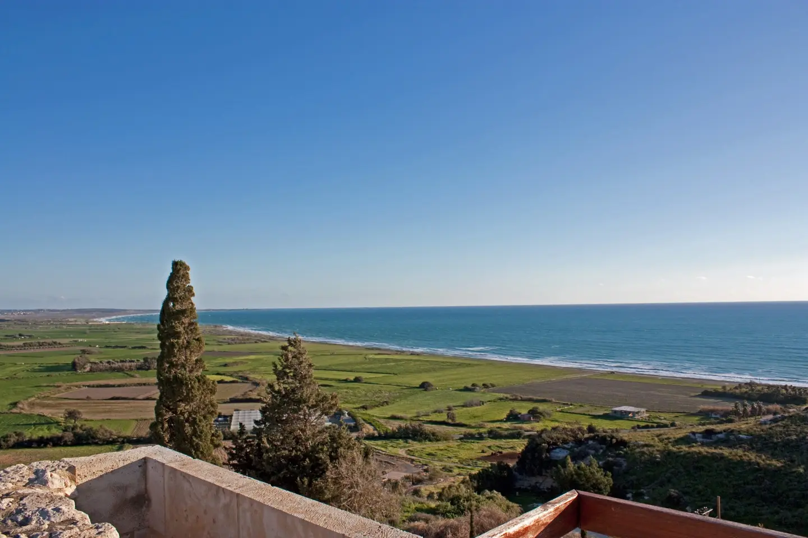
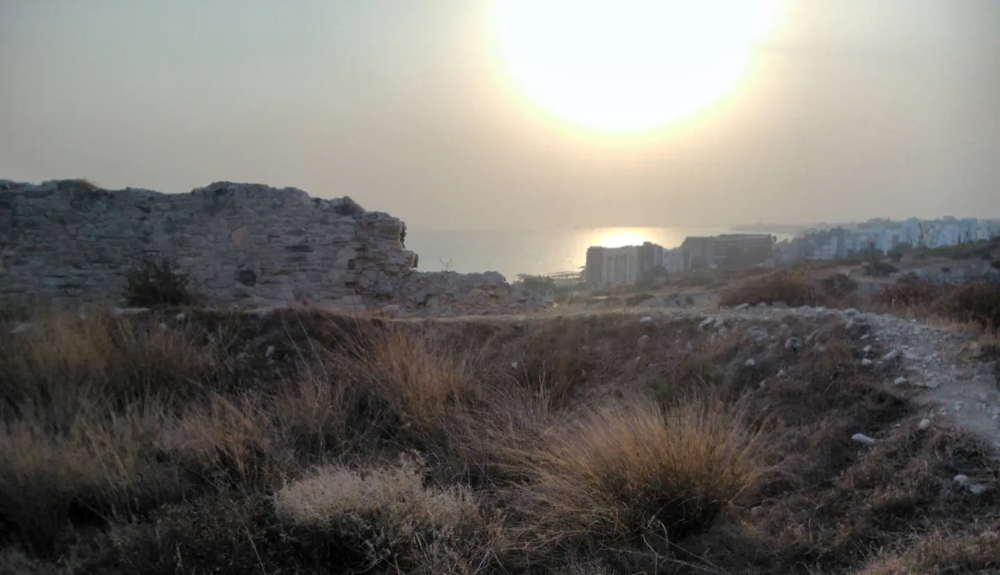
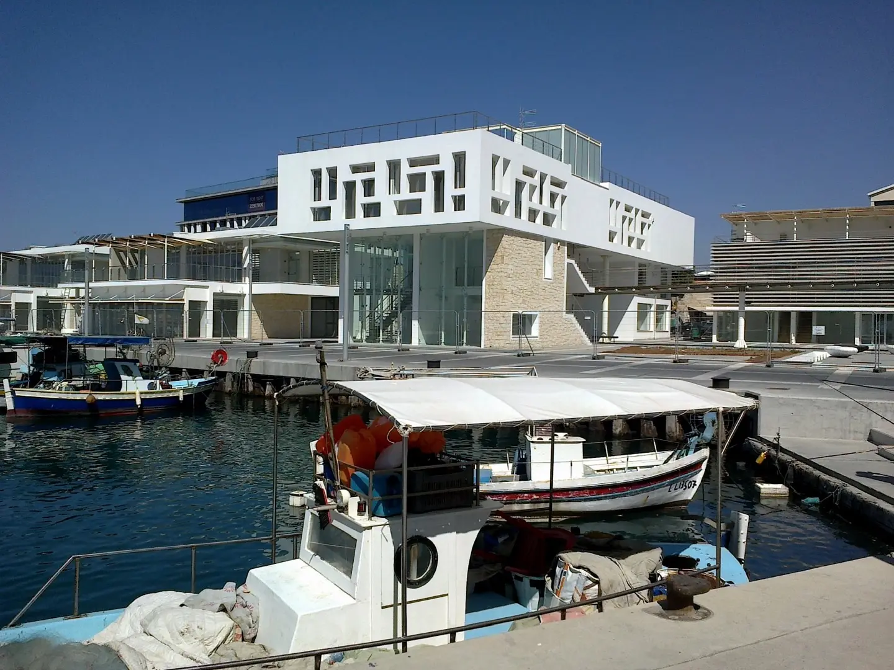
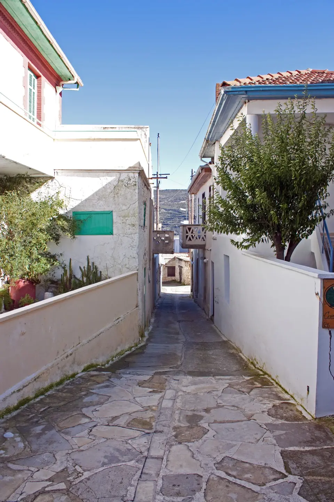
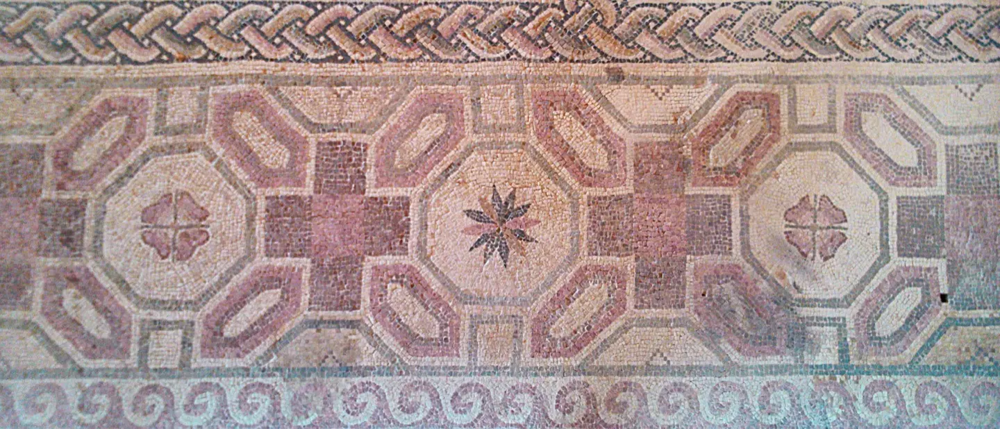
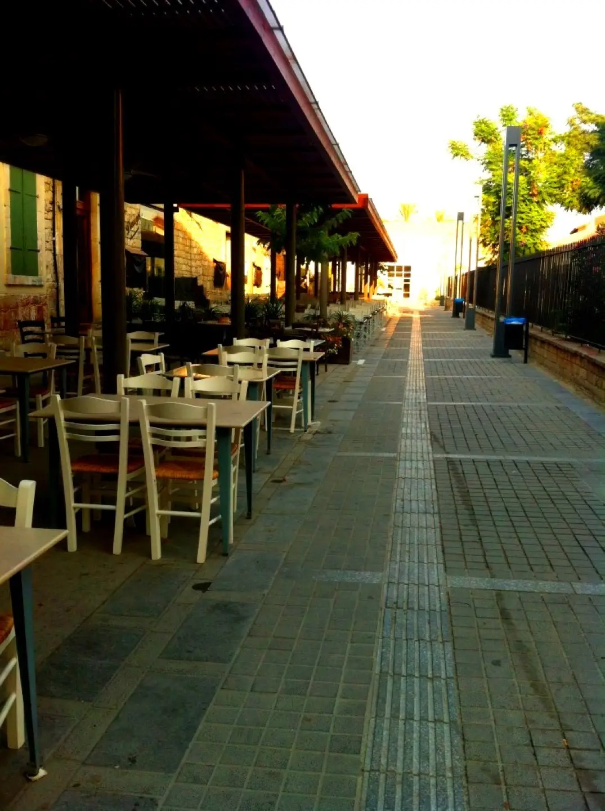
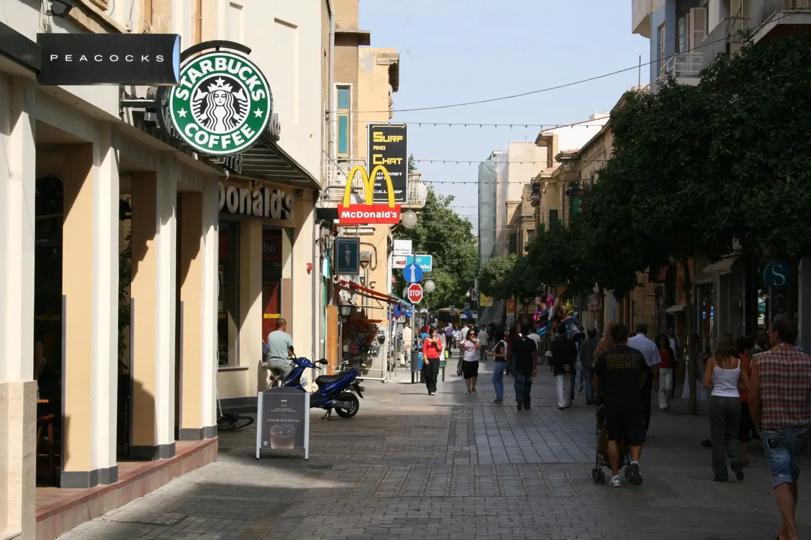

クリオンの劇場から望む地中海 ／ Wknight94 · 出典 ／ CC BY-SA 3.0 ／ 縮小・表示時トリミング

目次 · プロローグと九日間
古代 · アマトゥス 場面 1 / 1
プロローグ 船を出す朝


紀元前332年。アマトゥス。
メノンは、父が渡した縄をもう一度結び直した。
「そんな結び方じゃ、濡れたらほどけないぞ」
「ほどけない方がいいだろう」
「ほどけなければ困る時もある」
父は手を伸ばし、縄を解いた。指は太く、爪の間には黒い汚れが残っていた。
「海では、船より先に人を見ろ」
「またその話か」
「お前が忘れるからだ」
岸では、兵士たちが積み荷を数えていた。キプロスの船団は東へ向かう。ティルスを包囲するマケドニアの王に加わるのだという。
「敵の船でも？」
「沈んだ船に敵も味方もあるか」
「あるだろう。戦争なんだから」
父は縄を巻き直した。
「そう思う人間が増えると、港は小さくなる」
メノンには意味が分からなかった。
近くで幼いニコスが貝殻を並べていた。砂に掘った溝へ波が入るたび、貝殻の船が浮かび、ひっくり返る。
「こっちの船は入れない」
メノンが尋ねた。「なぜ？」
「敵だから」
「じゃあ、沈んだら？」
ニコスは考え、貝殻を溝の内側へ移した。
「沈む前なら、入れていい」
父が笑った。メノンは笑えなかった。
船が岸を離れると、家々が小さくなった。水面を黒い背が二つ、並んで横切った。誰かがイルカだと言った。
「海の王の使いだ」
別の船乗りが冗談めかして言うと、誰かが唾を吐いて災いを払った。
船団の書記は笑わなかった。港で聞き集めた話を、小さな板に書き留めている。
「それも報告するのか」とメノンが聞いた。
「王の陣営には、海のことを知る者が必要だ。風を読む者、潮を読む者、それから、海を支配したという古い王の話を知る者もな」
「昔話で戦に勝てるのか」
「勝てると信じる人間がいるなら、昔話にも値がつく」
書記は板を伏せた。メノンは、遠くで一列に進む軍船を見た。海の王の話を誰が欲しがっているのか、聞き返す気にはなれなかった。
メノンは振り返らなかった。
現代 · リマソール 場面 1 / 1
第一日 冷えたロゼワイン


2061年頃。リマソール。
律がアランのアパートに着いたとき、冷蔵庫にはワインが三本、食べ物はオリーブとチーズしかなかった。
「君はどうやって生きてるんだ？」
「非常にうまく」
「野菜は？」
「オリーブは植物だよ」
「フランス人の栄養学は信用できないな」
アランは窓を開けた。夕方の海が見えた。遠くに貨物船がいる。
九日分の荷物を床に置いて、律はようやく靴を脱いだ。窓の下では車がゆっくり走り、向かいのベランダでは誰かが洗濯物を取り込んでいる。ニューヨークを出る前に片づけた仕事のことを思い出しかけたが、潮の匂いが先に入ってきた。
「海が近いね」
「地図で見たとおりだろう」
「地図には匂いがない」
「次の更新でつくかもしれないよ」
「ようこそキプロスへ。九日間、歴史の話はしないと約束する」
「君が？」
「必要がなければ」
「もう破ってる」
二人は海辺の食堂へ出た。タコ、トマト、温かいパン。アランはロゼを注文し、律は海を眺めた。
「昔、この辺りに海の王がいたらしいよ」
「早いな。歴史の話をしない約束は？」
「これは伝説だ」
「考古学者にとって便利な分類だね」
アランは笑った。
「明日、アマトゥスへ行こう。海の中に港がある」
「潜るの？」
「君が望むなら。まず陸から見よう」
「海の王はそこで何をしていた？」
「知らない。いたかどうかも知らない」
「それでも『王』なんだ」
「人間は知らないものに、よく王の名をつける」
律はグラスを持ち上げた。
「じゃあ、王様に乾杯」
「存在しなかったかもしれない王に？」
「一番気楽な相手だろう。税金も取られない」
食事のあと、二人はすぐには帰らなかった。食堂の椅子は少しがたつき、テーブルの端には前の客がこぼした塩が残っていた。店の人が空いた皿を下げると、律はもう一杯だけ水を頼んだ。
港の灯りが一つずつ増えていく。さっきまで白かった船体が、暗い海に溶けていった。何かを見つけたわけでも、予定を決めたわけでもない。
波が石の護岸に当たった。海の向こうは、暗くなり始めていた。
現代 · アマトゥス 場面 1 / 2
第二日 第三巻
朝、アランは机に紙を広げていた。律がコーヒーをいれる間も、古い図面を見比べている。
「休暇中じゃなかったのか」
「僕は休暇だ。資料が休暇を取る必要はない」
机には、かつて行われたアマトゥスの水中調査の刊行報告書と、別の表紙を持つ薄い束があった。分厚い報告書は二冊。背表紙にはフランス語の題名が並んでいた。
「なんでフランスの考古学チームが、わざわざキプロスで調査してたんだ？」
「何を言ってるんだい。ここは三百年近く、フランス系の貴族が王様だった島だよ」
「フランスの植民地だったの？」
「違う。エルサレムを失ったフランス人が、代わりにキプロスの王になったんだ」
「王国を失ったから、別の王国を？」
「そう。フランス人は昔から、地中海に別荘を持ちたがる」
「ずいぶん大きな別荘だな」
「おかげで、今でもパンとワインには困らない」
「それはフランス人のおかげなのか？」
「君は歴史に感謝するということを知らないのか？」
律は報告書を持ち上げた。
「で、この二冊も、別荘の管理記録？」
「調査から何十年もかけて刊行した研究成果だ。フランス人は仕事が遅いんじゃない。時間の使い方を知っている」
「昨日のワインの選び方を見れば分かるよ」
律はその隣の、薄い束を指した。
「三冊目？」
「正式な第三巻じゃない。出るはずだった、という話と、残った草稿の断片だ。出なかった理由も、誰がどこまで書いたかも、まだ整理できていない」
「失われた秘巻？」
「そう呼ぶと研究費が増えるなら、考えてもいい」
律は笑った。
アマトゥスでは、丘の上の石が日差しを受けて白かった。海は近い。アランは港の位置を指した。
律は日陰を探して、低い壁に腰を下ろした。乾いた草が風に伏せ、遠くの道路から車の音がかすかに届く。古代の港を眺めに来たはずなのに、まず気になったのは、今すぐ泳げそうな海の色だった。
「ここで一時間ぐらい昼寝したい」
「遺跡の上では遠慮してくれ」
「考古学者は休暇中も厳しいね」
「石は僕らよりずっと長くここにいる。少し敬意を払ってほしい」
「昔の調査図で、説明がうまくつかない部分がある。構造物なのか、後から移動した石なのか、判断が割れている」
「そこに海の王の宮殿が？」
「まず君は宮殿から離れたまえ」
「王様なのに住むところがないなんて」
「人間の王じゃなければ？」
律は海を見た。
「海に住む王か。イルカみたいな？」
「海の知性についての伝承はある。ただ、伝承は証拠ではない」
「でも、面白い」
「それは否定しない」
アランは草稿の複写を見せた。港の一角について、二通りの読み方が書かれていた。軍船を守る施設か、交易船のためのものか。さらに余白に、別の筆跡で短い注記があった。
『海の王の贈り物』という地元の呼称については、記録者の説明を要確認。
「贈り物？」
「何を指すのか不明だ。港そのものか、航海の技術か、ただの地名かもしれない」
「王様が港をプレゼントした、と」
「君は本当に王様が好きだね」
「昔の王様も、そうだったんじゃないか。海の王から何か奪えると思って」
「征服する側は、何でも戦利品に見える。石の港も、航海の知恵も、ただの伝説も」
「で、何が見つかった？」
「君が今見ている、石と解釈の違いだよ」
律は崩れた石の先の海を見た。
「でも、もしイルカがものすごく賢くなったら、港なんか作るかな」
「人間のためなら作るかもしれない。自分たちには必要ないだろう」
「じゃあ何を残す？」
アランは答えなかった。
午後は海辺のカフェで過ごした。アランが報告書を開いたまま冷たい飲み物を飲み、律は端末に撮った写真を並べた。石の写真ばかりだと気づいて、海を一枚追加した。海の方がずっときれいに写っていた。
その日の夕方、律は浜辺で泳ぐ子供たちを見た。波打ち際で一人が転ぶと、隣の子が手を伸ばした。誰もその行為に名前をつけなかった。
古代 場面 2 / 2
第二日 第三巻
紀元前332年。アマトゥス。
テアは、港へ運ばれてきた男に水を差し出した。男は船乗りで、病人のために淡水を求めていた。
「どこの船？」
「北から来た」
「どこの港を出たの？」
男は答えをためらった。
テアは桶を押し出した。
「水を持っていって。話はあとで」
男は彼女を見つめた。
「代金は？」
「次に誰かが困っていたら、その人に返して」
男が去ると、隣の商人が言った。
「どこの人間か確かめもしないのか」
「喉が渇いていることは確かめたわ」
「商売には向いていないな」
「水は売ってないもの」
商人は肩をすくめた。
その夜、テアは祖母から昔話を聞いた。海の王は、船を導く道を人間に教えたのだという。
「道？」
「そう伝わってる」
「どこにあるの？」
「海の上には見えないよ」
「じゃあ、どうやって教えたの？」
祖母は笑った。
「それが分かれば、もう昔話じゃない」
現代 · クリオン 場面 1 / 2
第三日 王が欲しがるもの
クリオンの劇場で、律は客席の上段に座った。
背後には明るい空、前方には地中海が広がっていた。石段は日差しで温まり、風だけが涼しい。律は舞台を撮ろうとして、どうしても海が画面に入り込むことに気づいた。
「演目より景色が勝ちそうだ」
「役者には気の毒だね」
「ここで演説したら、誰でも偉くなった気がするね」
「それは現代でも変わらないだろう」
「イベント業界への批判？」
「観察だよ」
二人はコロッシの方へ車を走らせた。道沿いには低い家々と畑が続き、車窓を流れる木々の影が律の膝の上を横切った。アランは近道だと言って細い道へ入り、結局、道端の店で果物を買うことになった。
「近道だった？」
「人生全体で考えれば」
午後にはワインを飲んだ。アランは甘いワインの由来を長々と説明したが、律は途中で遮った。
「要するに、君はもう一杯飲みたいんだろ」
「正確な理解だ」
食後、律が尋ねた。
「海の王が本当にいたとして、古代の王たちは何を欲しがったと思う？」
「航海の安全、敵より早く船を動かす方法。王なら、たぶんそういうものだ」
「経験を共有する知性だったら？」
「何だって？」
「イルカが互いに見たものを、言葉以上に伝えられるとしたら。海の中の様子を全部共有できる」
「ずいぶん便利な仮説だ」
「王様なら欲しいだろう？」
「間違いなく。ただし、それを理解できたとは限らない」
古代 場面 2 / 2
第三日 王が欲しがるもの
紀元前332年。ティルス沖。
船団には、王の陣営へ送る報告が集められていた。どの港が協力するか、どこで水が得られるか、どの水路が敵の目を避けられるか。ある書記は、アマトゥスに残る「海の王が道を教えた」という伝承まで書き加えた。
「それが本当なら、王は欲しがるだろうな」と船長が言った。
「何をです？」
「敵の船より先に敵の船を見つける方法さ。海が全部見えていたら、負けようがない」
「海の王がそんなことを教えたと？」
「教えたかどうかはどうでもいい。王が欲しいのは勝つ方法だ」
メノンは船の外へ目をやった。遠くに、軍船の残骸が漂っていた。
海上で、キプロスの船が一隻、進路を変えた。メノンは櫂の列から身を乗り出した。
海には男が浮いていた。自分たちと違う装備を身につけている。
「敵だ！」
誰かが叫んだ。
船長は舵を戻すよう命じた。だがメノンは縄をつかんだ。
「まだ生きている！」
「戻れ！」
「縄を投げるだけだ！」
メノンは投げた。男はつかめなかった。二度目の縄が水に落ちたとき、船長は怒鳴った。
「お前が落ちたら、拾わんぞ！」
メノンは縁から身を乗り出し、男の手首をつかんだ。隣の漕ぎ手が黙って彼の腰を押さえた。
引き上げた男は水を吐き、震えていた。船長は男を見下ろした。
「お前は、こいつのために船を危険にさらした」
「見捨てれば、死んだ」
「それが戦争だ」
メノンは返事をしなかった。
男が身につけていた小さな紐飾りを、誰かが引きちぎった。敵の印だという。
メノンはそれを拾い、男のそばへ置いた。
その晩、メノンは見張りを命じられた。救った男が逃げないように、という理由だった。
男はかすれた声で何か言った。メノンには言葉が分からなかった。
二人は長いあいだ、海の音を聞いていた。
現代 · トロードス山麓 場面 1 / 3
第四日 同じ名前


トロードス山麓の村では、石の家の間を猫が歩いていた。山から吹く風は海辺より少し涼しい。窓辺に鉢植えが並び、路地の先では老人が椅子を日陰へ移していた。
二人は車を降りてから、しばらく目的もなく歩いた。律は石畳の模様を写真に撮り、アランはそれが何でもない路地だと教えた。
「何でもない路地を撮っちゃいけない？」
「むしろ、そういう写真の方があとで見返すだろうね」昼食の前に立ち寄った小さな展示室に、アランが足を止めた。
「これを見てくれ」
律は説明板を読んだ。古い航海の守護伝承に関する展示だった。海に救われた者が、次の遭難者を救うという習慣。その呼び名の一つに、ペラギアンに似た音が記されていた。
「また海の王？」
「そう書いたのはずっと後の人間だ。名前の伝わり方も怪しい」
「じゃあ、なぜ展示してる？」
「分からないものも、歴史の一部だからさ」
「研究者にとっては最高の言い訳だな」
アランは別の説明を指した。中世には、その呼び名が神学上の異端の名前と取り違えられた、という伝承があるらしい。
「海の話が宗教の話になったの？」
「言葉は持ち主を選ばない」
「便利な王様だ。軍人にも聖職者にも使われる」
「だから、僕は王様だと決めつけたくない」
外へ出ると、鐘が鳴った。広場の端には小さな店があり、焼いたパンの匂いが通りまで流れていた。律はまだ温かいパンを買い、紙袋の口を開けてアランに半分渡した。指先に粉がついた。
「これは何派のパン？」
「食べられる派だ」
「フランス人がそんな妥協を？」
「君といると、基準が下がる」
中世 場面 2 / 3
第四日 同じ名前
1231年。キプロス。カンタラの修道士たちが処刑されたという知らせが届いた翌朝。
あの人たちが死ななければ、次は私たちだったのかもしれない。
彼らが何を信じ、何を拒んだのか、私はよく知らない。顔も知らない。けれど、数日前まで私たちの集まりについて尋ねていた役人は、もう来なくなった。
昨日まで、戸を叩く音が怖かった。今朝は、誰も叩かないことが怖い。
男はパンを布で包んだ。まだ温かかった。
「隠す必要なんてないでしょう」
妻が言った。
「今はある」
「パンよ」
「知っている」
男は包みを棚へ押し込んだ。何を恐れているのか、自分でも言えなかった。戸が叩かれた。
訪ねてきたのは隣人だった。男は安堵し、同時に、棚に目をやった自分を恥じた。
「修道士たちのことを聞いたか」
男はうなずいた。妻が尋ねた。
「パンのことで死んだって、本当？」
隣人は卓のパンを見た。
「膨らませたパンか、膨らませないパンか。そんな話もあったらしい」
「それだけ？」
「それだけで済む話なら、あんなことにはならなかっただろう」
妻はしばらく黙っていた。棚から包みを取り出し、パンを卓に戻した。
「私たちのは、ただの朝ごはんね」
男は答えなかった。
隣人は声を落とした。
「港の役人が、帳面を持って別の仕事へ回されたそうだ」
「私たちの帳面か？」
「分からない。修道士たちの件で、上から人を集めるよう言われたらしい」
「それで、もう調べに来ない？」
「今日のところはな」
男はパンに手を伸ばしかけ、やめた。
「私たちは何をしたの？」と妻が聞いた。
「名前を呼んだだけだ」
「じゃあ、そう言えばいいでしょう」
男は棚を見た。さっき自分が何をしたか、妻は見ている。
助かった、と妻には言えなかった。誰かが死んだことを、私たちの幸運と呼んでいいのだろうか。
妻はパンをちぎり、隣人にも差し出した。男は黙って自分の分を受け取った。
中世 場面 3 / 3
第四日 同じ名前
数年前。南岸の港町。
まだ、誰も自分たちの集まりの名前を恐れてはいなかった。
マリアとサラは、港の端で魚を分けていた。サラの知り合いの船が嵐を避けて入港し、荷を下ろせずにいた。
「この人たち、誰？」とマリア。
「昨日までは知らない人たち」
「今日は？」
「魚を分ける人たち」
男が近づき、礼を言った。別の言葉を話す人間だったので、サラが通訳した。
「港の組合に入っていない船は、いつまでも助けてもらえない」
マリアが言うと、サラは肩をすくめた。
「だったら、組合じゃないやり方を考えればいい」
「名前は？」
「名前なんかいる？」
背後で年配の船乗りが笑った。
「昔は海の王の約束と呼んだもんだ」
「何それ？」
「爺さんの口癖さ。船を出すときも、知らない港に入るときも言っていた」
船乗りは杯を持ち上げた。何かの儀式というより、食事の前の挨拶のような調子だった。
「ペラギアン、海の王よ。異なる言葉を話す者、異なる神を信じる者を、同じ港へ導き給え」
マリアは手を止めた。
「それ、どこの神様へのお祈り？」
「神様かどうかも知らん。爺さんは、沖を群れで泳ぐ海の古い王たちの名だと言っていた。人間だったとは聞いてないな」
「じゃあ、どうして祈るの？」
「嵐のとき、隣の船が何を信じているかなんて聞いていられんだろう」
サラは、魚を待っている船乗りたちを見回した。
「同じ港に入れれば、まずは十分ね」
誰かが笑い、別の誰かがパンをちぎった。マリアも杯を上げた。言葉の意味を知っている者が何人いたかは、分からなかった。
現代 · パフォス 場面 1 / 3
第五日 欲しいもの


パフォスのモザイクを見ながら、律は言った。
床に残る細かな石片は、近づくと一つずつ色が違った。離れて見ると人物や動物が現れ、また近づくと、ただの石に戻る。律は同じ場所を二度行き来した。
「写真にすると平らだな」
「もともと床だよ」
「そういう意味じゃない」
「神様も王様も、昔の人はずいぶん忙しかったんだね」
「現代人が暇になったわけじゃない。仕事の名前が変わっただけだ」
港で昼食をとった。漁船の向こうに観光船が並び、テーブルには小皿が次々と運ばれてきた。律はどれが注文した料理なのか分からなくなり、アランは分からなくても食べられると答えた。焼いたハルミ、オリーブ、野菜、魚。二人はパンの話になった。
「ニューヨークで言えば、ベーグルかクロワッサンか。それが問題だ」
「君はベーグルとクロワッサンを同列に扱うのか？」
「ほら、もう宗教戦争が始まった」
「食文化を議論しているだけだ」
「時代が違えば、僕は処刑されてるな」
「フランスなら、まずまともなパンを食べさせて教育する」
律は笑ったが、アランは少ししてから言った。
「実際、昔はパンの違いが、もっと大きな対立の印になったことがある」
「本当にパンが問題だった？」
「パンだけなら、歴史家はもっと楽だっただろうね」
午後、アランは第三巻の草稿の別のページを見せた。古い伝承の採録者は、海の王の「贈り物」を、港の安全を守る決まりごとだと解釈していた。一方、別の注記では、海戦に勝つための知識だったとされている。
「どっちが正しい？」
「両方間違っているかもしれない」
「じゃあ、何も分からないじゃないか」
「そういう仕事なんだよ」
律は紙を見た。
「王は勝つための力を欲しがり、商人は安全な港を欲しがる。みんな自分の欲しいものを見てるんだね」
「君もだよ」
「僕は何を欲しがってる？」
「それを僕に聞くのか？」
律は返事の代わりにワインを飲んだ。
古代 場面 2 / 3
第五日 欲しいもの
紀元前332年。ティルス沖。
救われた男は、メノンの船から別の船へ移されることになった。捕虜として扱われるらしい。
「助けたのに、結局そうなるのか」
メノンが言うと、隣の漕ぎ手は答えた。
「海から助けた。戦争から助けたわけじゃない」
「違うのか」
「違うさ」
男はメノンに向かって、何度も同じ言葉を繰り返した。意味は分からない。
メノンは手を上げた。男も手を上げた。
それだけだった。
中世 場面 3 / 3
第五日 欲しいもの
1220年代末。南岸の港町。
サラの家で、マリアは異なる言葉を話す船乗りたちと食事をした。誰かが祈り、誰かは黙って待ち、誰かは先にパンを食べ始めた。
「みんな違うやり方ね」
「腹が減るのは同じよ」とサラ。
食事が終わるころ、年配の船乗りがいつものように杯を上げた。
「ペラギアン、海の王よ……」
居合わせた書記が顔を上げた。
「いま、何と言った？」
「船を出すときの挨拶さ」
「もう一度、名を」
「ペラギアン」
書記は卓の端に置いた帳面を開いた。
「誰に教わった？」
「爺さんに。ずっと昔に死んだよ」
「その人は、どんな教えを説いていた？」
船乗りは笑った。
「風が変わる前に帆を畳め、とかね」
書記は笑わず、筆を走らせた。
「何を書いたの？」とサラが聞いた。
「聞いた名と、ここに集まった人々のことだ」
「船乗りの挨拶よ。誰かの教えじゃない」
「そう聞いた、と書く」
「そのまま書いてくれる？」
「そう聞いた、と書いておく」
書記は再び筆を動かした。サラの席からは、帳面の文字が見えなかった。やがて書記は帳面を閉じた。
その夜、マリアは尋ねた。
「追いかけて、確かめた方がよかったかな」
「何を？」
「私たちが何を言ったことになったか」
サラは答えなかった。
数日後、港の帳簿を扱う役人がサラのところへ来た。
「この名で出入りしている者を教えてほしい」
役人の紙には、聞き覚えのある名が記されていた。その下には、サラたちが口にした覚えのない言葉が並んでいた。
「その名前は、海で助け合うときの呼び名です」
「では、そう申し立ててください」
「誰に？」
役人は紙を折った。
「こちらで確かめます。荷物に同じ印をつけているのは、なぜですか」
サラは荷物に結ばれた小さな縄の印を見た。誰が最初に考えたのか、覚えていなかった。
「預けた人に、返せるように」
役人はその答えも書き留めた。
現代 · キプロス南岸 場面 1 / 3
第六日 見えない港
朝、律はアランのアパートのソファで資料を読んでいた。
窓から差す光が床を少しずつ移動していた。アランは台所で果物を切っている。律は一ページ読んでは海を眺め、また同じ行に戻った。誰にも急かされないと、読書の進み方まで変わるらしい。
「第三巻の話、少し分かってきた」
「ほう」
「何も分かっていないということが」
「立派な研究者になれるよ」
二人は海へ泳ぎに行った。岩場から少し離れたところで海に入り、岸の白い石が水越しに揺れるのを見た。潜ると耳の中が静かになり、自分の息の音だけが大きくなる。水面の下には岩があり、魚の群れが方向を変える。律は息を継ぎながら、遠くを泳ぐ二つの背を見た。イルカだったのか、波だったのか、確かめる前に消えた。
昼、海沿いの店で律が言った。
「もし海の王が、イルカみたいな生き物の集まりだったら？」
「続けたまえ」
「お互いの見たものや感じたことを、言葉にしなくても共有できる。船が沈みそうなら、誰か一人が見ればみんな分かる」
「分かったとして、助けるとは限らない」
「君はいつも夢がないな」
「夢に条件をつけるのが僕の仕事だ」
「でも、そんな知性にとって、港って何だろう」
「避難する場所じゃないか。あるいは、集まって何かを交換する場所」
「物じゃなくて、経験を？」
「仮にね」
律は笑った。
「それなら、海の王の遺産は石の港じゃないかもしれない」
アランはグラスを置いた。
「そこは面白い。ただし、面白い仮説と正しい仮説は違う」
「分かってる。休暇の話だから」
古代 場面 2 / 3
第六日 見えない港
紀元前306年頃。アマトゥス。
海戦の知らせが届いた。誰が勝ったかより先に、何隻戻らないかが港に伝わった。
年老いたテアは、若い港湾役人が持ってきた図面を見ていた。
「ここに防波の施設を増やす。海を押さえれば、次の戦いに備えられる」
「ここは、風が変わると波が回り込む」
「古い言い伝えでは、海の王が道を教えたそうですね」
「言い伝えは船を浮かべないよ」
役人は図面を叩いた。
「昔の港がどこにあったか、知りたいんです。王が求めている」
「王はいつも何かを求めるね」
「勝つためです」
テアは海を見た。
「海がどこを通りたいか、先に聞いたらどうだい」
「海は答えません」
「だから、見て覚えるんだよ」
役人は不満そうだった。
テアの弟ニコスは、今では船を修理する男になっていた。役人が去ると、ニコスは言った。
「また、海の王の港を探している」
「見つかるといいね」
「本当にそう思う？」
「港を探す人間は、たいてい自分の船を入れたいだけさ」
その晩、嵐で一隻の小船が入江に入ってきた。港の見張りは許可を出さなかった。船は敵側の港から来ていた。
ニコスは修理用の舟を出した。
「今度はお前か」とテア。
「昔、砂の港にどの船でも入れたら、兄さんに笑われた」
「メノンは笑わなかったよ」
ニコスは櫂を取った。
「じゃあ、正しかったのかな」
「さあね。帰ってから話そう」
中世 場面 3 / 3
第六日 見えない港
1231年。南岸の港町。処刑の知らせが届く数日前。
マリアとサラは日の出前に倉庫へ向かった。預かった布の包みと、その中に縫い込まれた手紙を取り戻すためだった。
「届けない方がいい」とサラが言った。
「姉さんからの手紙よ。待っている人がいる」
「手紙に名前がある。あの人まで調べられるかもしれない」
「だからって、黙って預かったままにするの？」
「知らなければ、聞かれても答えずに済む」
マリアは立ち止まった。
「それは、私たちが決めること？」
サラはすぐには答えなかった。
「会いに行こう」と言った。「手紙を持って。受け取るかどうかは、本人に聞く」
「危険だって、先に言うのね」
「言わずに渡す方が怖い」
倉庫番は鍵を開けた。
「今日から管理が変わる。急いでくれ」
「何が変わるの？」
「誰が許可を出すかだ。荷物の出入りも、名前を照らして調べるそうだ」
包みはすぐに見つかった。手紙には、離れ離れになった家族が預けた衣類と、町にいる受取人の名前が書かれていた。何も秘密はなかった。
外で足音がした。倉庫番は二人を押し出し、扉を閉めた。
「昨日のうちに渡したことにしよう」
「でも今日は……」
「昨日は、まだ私が管理していた」
マリアは包みを抱えて走った。サラは後を追った。
現代 · リマソール 場面 1 / 4
第七日 名前を呼ぶ


リマソールの城を見終えたとき、律はアランに言った。
城の外では、日差しの下を買い物袋を持った人々が行き交っていた。律は入口のそばで買った冷たい飲み物を飲み、アランは城壁の石について説明しかけたが、律が先に言った。
「その石が何世紀のものかは、昼食のあとにして」
「僕はまだ何も言っていない」
「表情で分かる」
「古いものが残るって、どういうことなんだろうね」
「急にどうした」
「石は残る。名前も残る。でも、その人が何を考えていたかは、たいてい残らない」
「残っていても、読めるとは限らない」
「第三巻も？」
「またそれか」
「君の方から持ち出したんだよ」
アランは少し黙ってから、複写の一枚を出した。草稿には、海中の石の配置を「人工の港湾設備」と見る説と、別の自然的説明が並んでいた。後年の整理で採用されなかった読みもある。
「僕が気になっているのは、隠された真実じゃない。なぜ当時の研究者が、あれを港だと見たのか。その判断の過程だ」
「君も自分の見たいものを見てる？」
「当然。だから他人の記録を読む」
二人は市場で食べ物を買った。熟れたトマトを選び、ハーブの束を嗅ぎ、予定になかった果物まで袋に入れた。帰り道、律は何を作るか聞いた。
「冷蔵庫の中身次第だ」
「考古学より柔軟だね」
「考古学にも、そうあってほしい」
アパートで夕食を作った。アランはオリーブの切り方にまで注文をつけ、律はその度に大げさに謝った。
中世 場面 2 / 4
第七日 名前を呼ぶ
1231年。南岸の港町。
手紙の受取人は縄職人の妹だった。彼女は包みの中の子供の上着を見て、指で刺繍をなぞった。
「姉の縫い方です」
「手紙もあるわ」とマリア。
女は紙を見たが、手を出さなかった。
「私の名前が書いてある？」
「ええ」
「誰が運んできたかも？」
「書いてあるかもしれない」とサラが答えた。「読んでいないの」
女は上着を胸に寄せた。
「じゃあ、読まないで」
「でも、姉さんからよ」とマリアが言った。
「知ってる。だから、ここまで持ってきてくれてありがとう」
女は扉の外を見た。
「私が誰とつながっているか、もう調べられている。紙まであれば、姉の家族も困る」
マリアは手紙を差し出しかけた。
女は首を振った。
「持って帰って」
マリアは手を下ろした。女は上着だけを受け取り、戸を閉めた。
帰り道、マリアは手紙を取り出した。封はまだ閉じている。
「燃やす？」
「いまは、しまっておこう」
「私たち、姉さんの言葉を隠すことになる」
「そうね」
「それでいいのかな」
サラは答えなかった。二人は手紙を持って帰った。
中世 場面 3 / 4
第七日 名前を呼ぶ
1231年。別の家。
倉庫番は妻と夕食をとっていた。仕事を失ったことを話すと、妻は言った。
「次は何をするの？」
「まだ分からない」
「後悔してる？」
「鍵を開けたことか？」
「そう」
男は少し考えた。
「次も、同じことをするかは分からん」
「そうでしょうね」
「でも、今朝のことは、しなかったことにはできない」
戸が叩かれた。男は立ち上がった。
外にいたのは、昨日まで一緒に荷を運んでいた若者だった。
「別の船の仕事があります。来ませんか」
男は妻を振り返った。
「明日の朝、返事をする」
戸を閉めると、妻が言った。
「今度は、ちゃんと朝まで待ってね」
男は笑った。
古代 場面 4 / 4
第七日 名前を呼ぶ
紀元前306年頃。アマトゥス。
夜明け、ニコスの舟が戻った。小船の人々は全員ではなかったが、岸へ上がった者たちは歩けた。
テアは水を運んだ。
「港の見張りは？」
「怒っている」
「そりゃそうだろうね」
「姉さんも？」
「私は、船を直す人手が増えたと思ってる」
ニコスは笑った。
海の向こうでは、勝った王の旗が上がっていた。
現代 · ニコシア 場面 1 / 4
第八日 向こう側


律は荷物を車に積み、アランとニコシアへ向かった。今夜だけは旧市街に泊まる。
「最後の日に、また国境？」
「厳密には、説明が長くなる」
「君が説明を省くなんて珍しい」
「休暇の最後ぐらいはね」
南側の旧市街を歩いた。狭い通りには日除けが張られ、店先には衣類や土産物が並んでいた。角を曲がるたびに違う言葉が聞こえた。律は小さな菓子を買い、包みを開ける前にアランにも一つ渡した。
商店街の先で二人は身分証を出した。係員は確認し、通過を認めた。
律は北側へ数歩進み、振り返った。
「もっと物々しい場所かと思ってた」
「何を期待していたんだい」
「壁とか、兵士とか」
「あるところにはあるよ」
「でも、ここは普通の商店街だ」
「商店街だからね」
二人は笑った。
少し先で、男性が係員と話していた。手に書類を持ち、何度も同じ方向を指している。
「向こうに家族がいるんです。会って戻るだけです」
係員は書類を返した。
「その書類では、ここを通れません」
男性はしばらく動かなかった。
律とアランは足を止めたが、会話に割り込まなかった。男性は携帯端末を取り出し、誰かに短く連絡を送った。やがて、来た道を戻っていった。
律は自分のパスポートをポケットに入れた。
「僕たちは、あっさり通れたのに」
「そうだね」
「家族に会いに行くだけなのに」
アランは答えなかった。
昼食は北側の店でとった。中庭の木がテーブルに影を落とし、皿には香辛料の香りが残っていた。料理は温かく、店主はよく笑った。アランは食後のコーヒーを頼み、律は通りの向こうから聞こえる食器の音を聞いていた。律は少し前に見た男性のことを話しかけ、やめた。代わりにパンをちぎった。
「君、またパンの食べ方に文句をつける？」
「今日は許そう」
「国境を越えると寛容になるんだね」
「君は、僕がどこにいても同じ人間だと思っていたのかい？」
「違うの？」
「昼食の前と後では、ずいぶん違う」
律は笑った。
夕方、二人は旧市街の道を歩いた。軒先の灯りがつき始め、猫が店の椅子の下で眠っていた。律は今日撮った写真をアランに見せた。建物よりも、昼食の皿の写真が多かった。
「考古学の旅としては失格だね」
「休暇としては優秀だ」
行き止まりになった通りの先に、建物の壁が見えた。反対側にも同じ空が広がっていた。
中世 場面 2 / 4
第八日 向こう側
1231年。南岸の港町。処刑の知らせが届いてから数日後。
マリアは家の小箱に手紙をしまった。サラは隣で、ほつれた布を縫い直していた。
「いつか渡せるかな」
「分からない」
「役人はもう来ないって」
「今日はね」
マリアは箱の蓋を閉じた。
「名前を聞かれたら、今度は何て言う？」
サラは針を止めた。
「前と同じことを言うわ」
「本当のこと？」
「そう」
「それで信じてもらえる？」
サラはまた縫い始めた。
外では子供たちが走り、誰かが魚の値段を怒鳴り、隣家から焼いたパンの匂いがした。
戸が叩かれた。
来たのは、港の仕事を失った倉庫番だった。手に縄の束を持っている。
「明日から別の船に乗る。必要なものがあれば預かるよ」
サラはしばらく男を見た。
「預けるものなら、もうありません」
「そうか」
「でも、帰ってきたら食事に寄って」
男はうなずいた。
古代 場面 3 / 4
第八日 向こう側
紀元前306年頃。アマトゥス。
若い役人は、新しい港の計画を広げていた。海の王の伝承を記した欄に、赤い印がついている。
「勝った王は、海の道を手に入れたがっている」
テアは答えた。
「道は持てないよ」
「海を支配する方法なら、持てます」
「そうだといいね」
役人は苛立った。
「あなたは、海の王が何を残したか知っているんですか」
テアは首を振った。
「知らないよ。私が知っているのは、波が高い日に船を出すと、帰りが遅くなることぐらいだ」
役人は図面を巻いた。
その夜、ニコスは子供に、小さな貝殻の船を渡した。
「港を作ってみろ」
子供は砂に溝を掘った。
「どの船を入れる？」
「好きな船」
「それじゃ、港がいっぱいになるぞ」
「大きくすればいい」
ニコスは笑った。
現代 場面 4 / 4
第八日 向こう側
2061年。ニコシア。
ホテルへ戻る途中、律はアランに言った。
「君の海の王は、国境を作ったと思う？」
「僕の王じゃない」
「じゃあ、誰の？」
「知らない」
「便利な答えだな」
アランは立ち止まった。
「でも、仮に互いの経験を直接共有できたとしても、争わないとは限らない」
「なぜ？」
「相手が何を望んでいるか分かっても、それを許せるとは限らないからだ」
律は考えた。
「そうだね」
「失望した？」
「いや。少し、面白くなった」
「どうして？」
「それでも、何か違う社会を作れたかもしれないから」
二人はホテルへ歩いた。明日は早い。
現代 · キプロス 場面 1 / 2
第九日 帰る船
朝、律は荷物を閉め、アランに鍵を返した。
「返す必要はない。ホテルの鍵だよ」
「そうだった」
「九日でずいぶん疲れたらしいね」
「君の説明のせいだ」
「ほとんど説明していない」
「それが一番疲れる」
ラルナカへ向かう道では、朝の光が低い建物の壁を照らしていた。車の窓から、海が見えたり隠れたりする。律は道沿いの看板を眺め、知らない店の名前をいくつか覚えた。次に来ることがあれば寄ろうと思い、すぐに忘れた。
アランは第三巻の草稿について話した。
「帰ったら、当時の研究者の別のノートを探してみる。どこまで分かるかは知らない」
「もし本当に海の王がいたら？」
「考古学者としては、まず証拠を見たい」
「人間としては？」
アランはしばらく考えた。
「何を食べていたか、知りたいね」
「そこ？」
「文明を理解するなら、食卓からだろう」
「海の中にテーブルが？」
「また人間の家具を持ち込む」
二人は笑った。
空港の近くで、律は海を見た。船が沖を進んでいた。
「結局、贈り物って何だったんだろう」
「港かもしれない。海を読む知識かもしれない。あとから誰かが作った話かもしれない」
「ずいぶん役に立たない答えだね」
「君のために研究しているわけじゃない」
「知ってる」
アランは車を止めた。
「楽しかったよ」
「僕も。第三巻の続きを見つけたら知らせて」
「もちろん。今度はちゃんと読める原稿だといいが」
「休暇のあいだ、結局何も発見しなかったね」
「ロゼの良い店を三軒見つけた。十分な成果だろう」
「考古学者としては？」
「休暇中だと言ったはずだよ。またどこかで」
「今度は僕がニューヨークへ行こうか」
「まともなクロワッサンの店を探しておく」
「それなら、旅の目的ができた」
律は荷物を持って降りた。アランの車が見えなくなるまで、少しだけ立っていた。
搭乗口で、律は旅の写真を眺めた。海、石、パン、ワイン、古い港の図面。どれにも海の王は写っていない。
もし、かつて海に、人間とは違う高度な知性がいたのだとしたら。
彼らが何を作り、何を価値としたのか。陸で生き、言葉で意思を伝える人間がそれを理解するまで、どれほどの年月が必要なのだろう。律には見当もつかなかった。
けれど、いまの人間は、数百年も隔絶していた文明の人々とさえ、VRとAGIを介して初めて会ったその場から言葉を交わせる。ならば、いつか人間も、互いの経験や意図を今より深く分かち合える社会を作れるのかもしれない。
そのとき初めて、人類はペラギアンの遺産を受け取るのだろうか。
律は端末を閉じた。
搭乗案内が始まった。
古代 場面 2 / 2
第九日 帰る船
紀元前332年。ティルス沖。
メノンは船の縁に座り、海を見ていた。救った男は、もう別の船に移された。どこへ連れて行かれたか分からない。
隣の漕ぎ手が言った。
「お前、あの男の名前を聞いたか」
「聞いてない」
「礼を言われたか」
「言葉が分からなかった」
「じゃあ、何も分からないまま助けたのか」
メノンは答えた。
「溺れているのは分かった」
男は笑った。
遠くの海面で、何かが一度だけ跳ねた。
船は西へ向かっていた。
終